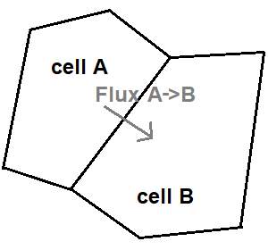
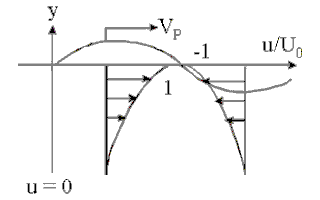
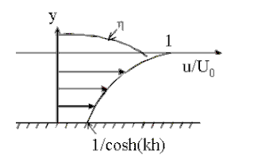
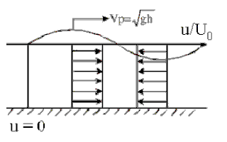

Real-time physic simulations
Created on 2024, W.I.P
I will detail some simulation techniques that can run on real-time. I also detail quick ways to implement them.
Incompressible fluid simulation
Water and outside air can be simulated as incompressible fluids. Such simulations are often combined with a diffuse phenomena, like the spread of smoke. To simulate incompressible fluid, we need to solve the Navier-Stokes equations. Note that I describe a 2D case, but all of be extended into 3D in the same manner. The governing equations are: $$ \delta_x u + \delta_y v = 0 $$ $$ \delta_t u + \delta_x (u u) + \delta_y (u v) = - \delta_x p + \mu ( \delta_{xx} u + \delta_{yy} u ) $$ $$ \delta_t v + \delta_x (v u) + \delta_y (v v) = - \delta_y p + \mu ( \delta_{xx} v + \delta_{yy} v ) $$ $$ \delta_t s + \delta_x (s u) + \delta_y (s v) = k ( \delta_{xx} s + \delta_{yy} s ) + s_e $$ where \( u,v \) are the fluid velocity component on x and y axis, \( \rho \) the density, \( p \) the pressure field, \( \mu \) the dynamic viscosity, \( s \) a physical quantity (like smoke) transported by the fluid with \( k \) its dissipation factor and \( s_e \) a source term.
Part 1: the incompressibility constrain
The first equation is realizing the incompressiblity of the fluid. In fact, it does not contain time-derivative term. This equation can be taken apart, and transformed into a constrain. A theorem allows to split the system: we can solve the 3 last equations without taking account for the pressure, and then apply a pressure correction.
Starting from the valid state (in which the incompressibility constrain is fulfilled) ( \( u_c, v_c, p_c, s_c \) ), we obtain new values with the 3 last equations ( \( u_\star, v_\star, s_\star \) ). Then, we compute the pressure correction by resolving the following system: $$ \delta_{xx} \tilde{p} + \delta_{yy} \tilde{p} = - ( \delta_{x} u_\star + \delta_{y} v_\star ) $$ Finally, the new state is: $$ \begin{align} u &= u_\star - \delta_x \tilde{p} \\ v &= v_\star - \delta_y \tilde{p} \\ p &= p_c + \tilde{p} \\ s &= s_\star \end{align} $$
Part 2: advection-diffusion with the finite-volume space discretization
The advection-diffusion physic phenomena is one of the big challenges for simulations. The advection is basically the transport phenomena. The diffusion is actually simpler to handle, because it tends to smooth the physic quantities over the time.

I will employ the finite-volume method, that is one of the most common spatial discretization methods for simulations. The finite-volume method is based on the discretization on the space by contiguous and finite volumes (or by surfaces in 2D). The set of volumes is called the mesh of the discretization, and the volumes are called cells. The physic quantities (like the fluid velocity \(u,v\) ) are considered constant over each cell. Then the goal is to compute the flux between cells. Let denote \( U, V, P, S \) the constant-per-cell values of \(u, v, p, s\). The equations to solve are, for each cell \( i \): $$ \delta_t U_i + \sum_{j} { F^u_{ij} } = 0 $$ $$ \delta_t V_i + \sum_{j} { F^v_{ij} } = 0 $$ $$ \delta_t S_i + \sum_{j} { F^s_{ij} } = s_e $$ where the fluxes \( F^u, F^v, F^s \) are evaluated such that the given equations are resulting to behave like the initial governing equations.
The formulation of the fluxes imply some advanced mathematics. A first approach is to compute the flux as the mean flux between both side of the edge, but the results are unstable. A second approach is to consider the up-wind flux, by taking the flux of the cell from which the quantities are "moved" from. The results are stable, but have a lot of dissipation. The chosen approach is somehow a mix of the first two approaches, using flux limiters. $$ F_{ij} = (1 - \phi) F_{ij}^{low} + \phi F_{ij}^{high} $$ where \(\phi\) is the flux limiter, \(F^{low}\) a low-order flux that is stable and \(F^{high}\) a high-order flux that is unstable.
Part 3: the time integration
Work in progress ...
Results
Work in progress ...
Shallow water simulation
The goal is to simulate the waves on the free-surface of water. Such simulations are often called 2.5D simulations, because it gives a space dimension (height) over a two dimensional domain. Whereas the Airy wave theory is used to simulate deep water simulation, the shallow water simulation can be used when the ratio of the wavelength by the depth is around 1/20. With the shallow water approximation, the fluid velocity is considered constant over the water column.
| |
Deep water | Intermediate water | Shallow water |
|---|---|---|---|
| Velocity profile |
 |
 |
 |
| Dispertion relation | \( \omega = \sqrt { g k } \) | \( \omega = \sqrt { g k \tanh ( g k ) } \) | \( \omega = k \sqrt { g h } \) |
The governing equations
The shallow-water equations are derived from the 3D Navier-Stokes equations, and taken in the conservative form: $$ \delta_t h + \delta_x (hu) + \delta_y (hv) = 0 $$ $$ \delta_t (hu) + \delta_x (h u^2 + \frac{1}{2} g h^2) + \delta_y (huv) = - gh \delta_x (z) $$ $$ \delta_t (hv) + \delta_x (huv) + \delta_y (h v^2 + \frac{1}{2} g h^2) = - gh \delta_y (z) $$ where \( h \) is the water height, \( u,v \) is the mean velocity of the water on the water column, \( z \) is the sea-bed elevation. The mathematical properties of this system make it hard to simulate. Indeed, this system is an hyperbolic partial differential set of equations. Especially, discontinuities can appear in the water height when a wave on a sloped beach is going to break. If we consider an 1D case, where \( h, u, v, z \) are constant over the y-coordinate, then the 1D shallow-water equation is: $$ \delta_t \begin{bmatrix} h \\ hu \\ hv \end{bmatrix} + \begin{bmatrix} 0 & 1 & 0 \\ gh - u^2 & 2u & 0 \\ 0 & 0 & u \end{bmatrix} \cdot \delta_x \begin{bmatrix} h \\ hu \\ hv \end{bmatrix} = \begin{bmatrix} 0 \\ - gh \delta_x (z) \\ 0 \end{bmatrix} $$ We recognize a system of coupled transport equations. The eigenvalues of the coupling matrix are \( u - \sqrt{gh} \), \( u \), \( u + \sqrt{gh} \). From this, an analytic solution exists on the associated Riemann problem, also called the dam-break problem on this particular case. Those mathematical properties will be useful to find a proper integration scheme.
Part 1: the space discretization with the compute of the fluxes
Work in progress ...
Part 2: the time integration
Work in progress ...
Results
Work in progress ...
Constrain-dynamics (X-PBD)
The X-PBD (Extended - Position Based Dynamics) is a simulation technique in which the physic constrains (like a fixed-distance constrain or a kinematic join constrain) are solved by successive iterations, and run directly with the position of the physic objects. This method was been popularized by Matthias Muller. The main advantage is that this method is quick to implement and it rapidly shows good results with good flexibility. However, it can fail to some instabilities and the results may depend on the time step.
Work in progress ...